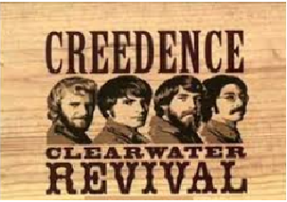
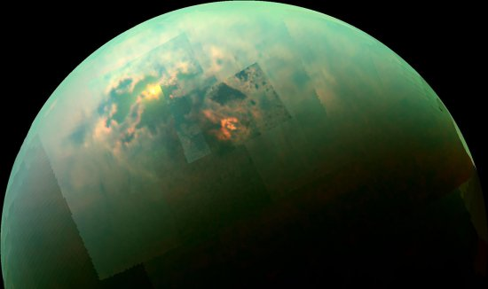

Creedence
Creedence Clearwater Revival, aun cuando representa un óptimo ejemplo de la tercera generación de formaciones rock de San Francisco, ha sido mucho más que un simple grupo de la Costa Oeste: la única cosa que tuvo en común con sus contemporáneos fue la geografía. Fue un grupo, en su estilo, a contracorriente, ya que las tendencias prevalecientes en el rock de la Costa Oeste hasta finales de los sesenta eran la exploración psicodélica, los slogans radicales y hippies y una cerebral búsqueda musical. CCR centró su inspiración en el rock'n'roll de los años cincuenta, en el country y en el rhythm & blues, terminando por construir un sonido que llegó a capturar tanto a los fans del pop como a los del rock. Su éxito, tanto en el mercado de los singles como en el de los álbumes, fue extraordinario.


El mapa de los planetas
La aplicación Google Maps ha añadido a su plataforma 12 nuevos astros del Sistema Solar. Gracias a la colaboración de la NASA con la Agencia Especial Europea, ya podemos ver los mapas cartograficos de planetas como Venus y satélites como Encélado.
En el modo satélite 3D se puede navegar por la geografía de otros planetas, satélites y planetas enanos. Al igual que su aplicación en el modo satelite, Google Maps permite navegar por la superficie de los astros del Sistema Solar, haciendo zoom y permitiendo ver los principales accidentes de los cuerpos.